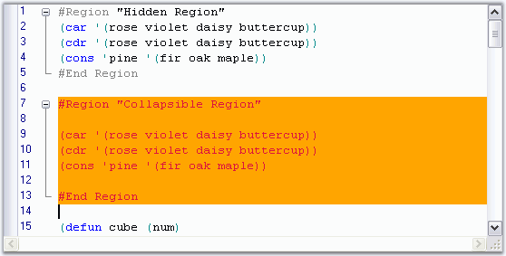

Edit Control allows you to specify read-only regions in the code, i.e., regions that are uneditable. This can be achieved through the following methods.
|
Edit Control Method |
Description |
|
MarkAsReadOnly |
Sets text as read-only. |
|
RemoveReadOnly |
Removes read-only status of specified region. |
|
[C#]
// Specify a read-only region. this.editControl1.MarkAsReadOnly(this.editControl1.Selection.Start, this.editControl1.Selection.End, Color.Orange, Color.Crimson);
// Reset a read-only region. this.editControl1.RemoveReadOnly(this.editControl1.Selection.Start, this.editControl1.Selection.End); |
|
[VB.NET]
' Specify a read-only region. Me.editControl1.MarkAsReadOnly(Me.editControl1.Selection.Start, Me.editControl1.Selection.End, Color.Orange, Color.Crimson)
' Reset a read-only region. Me.editControl1.RemoveReadOnly(Me.editControl1.Selection.Start, Me.editControl1.Selection.End) |
The following screen shot shows a read-only region in the code section of the Edit Control.

Figure 39: Read-Only Region with Orange Background and Crimson Text Color
A sample which demonstrates this feature is available in the following sample installation path.
..\My Documents\Syncfusion\EssentialStudio\Version Number\Windows\Edit.Windows\Samples\2.0\Advanced Editor Functions\ TextRangeCustomizationDemo